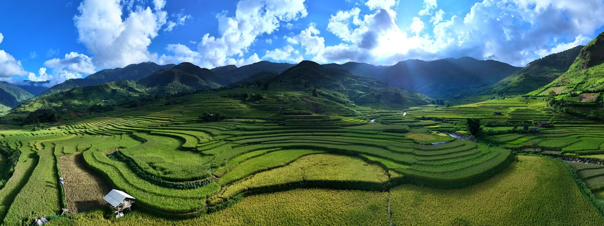
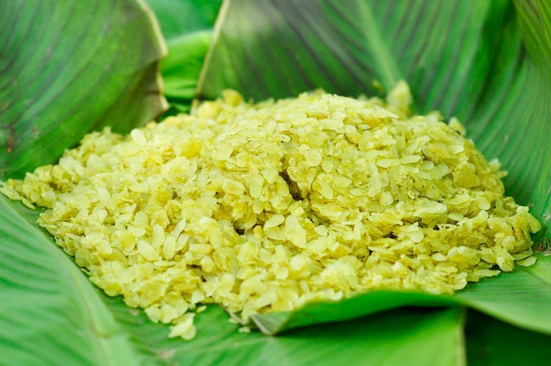
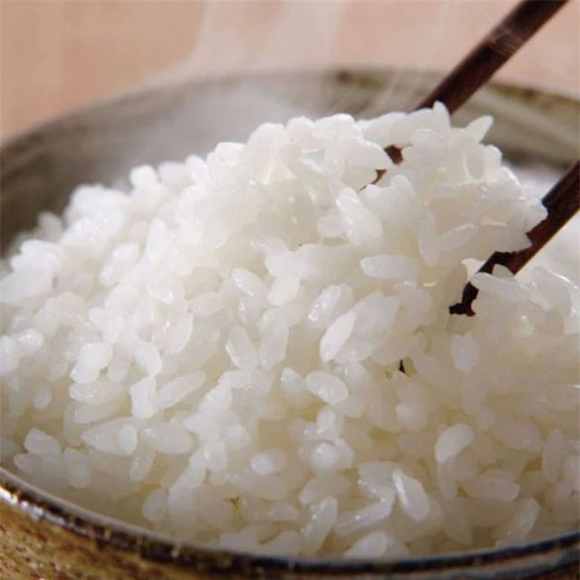

Giữa tháng 8 – giữa tháng 9Mid-Aug – mid-Sep
Ruộng bậc thang Khau PhạKhau Phạ rice terraces
Những thửa ruộng bậc thang uốn lượn quanh đèo Khau Phạ chuyển sang màu vàng óng khi lúa chín. Đẹp nhất từ giữa tháng 8 đến giữa tháng 9.The terraced fields winding around Khau Phạ Pass turn bright gold as the rice ripens. Best from mid-August to mid-September.
Giữa tháng 8 – giữa tháng 9Mid-Aug – mid-Sep
Bay dù lượn đèo Khau PhạParagliding at Khau Phạ Pass
Khau Phạ – “Sừng Trời” – là một trong tứ đại đỉnh đèo Tây Bắc. Bay đôi cùng phi công từ độ cao khoảng 1.200 m, ngắm trọn thung lũng Tú Lệ và ruộng bậc thang bên dưới.Khau Phạ – the “Horn of the Sky” – is one of the four great mountain passes of the Northwest. Fly tandem with a pilot from about 1,200 m and take in the Tú Lệ valley and terraces below.
 Ấm áp quanh nămWarm all year
Ấm áp quanh nămWarm all year
Tắm suối khoáng nóngHot spring bathing
Ngay trung tâm xã có bể khoáng nóng tự nhiên khoảng 35°C, nơi người Thái thư giãn sau ngày làm việc. Hãy giữ ý khi chụp ảnh người đang tắm.Right in the village centre there is a natural hot spring pool at around 35°C where local Thai people unwind after work. Please be respectful when photographing bathers.
 Phiêu lưuAdventure
Phiêu lưuAdventure
Zipline & khu phiêu lưu Aeris HillZipline & Aeris Hill adventure park
Trên sườn đèo Khau Phạ: đường trượt zipline dài khoảng 1,2 km, leo dây trên cao, leo vách đá và lăn bóng zorbing giữa rừng thông.On the slopes of Khau Phạ Pass: a zipline about 1.2 km long, high-rope courses, rock climbing and zorbing through a pine forest.

Tháng 9–10Sep–Oct
Cốm Tú LệTú Lệ green rice flakes (cốm)
Làm từ lúa nếp Tan non của người Thái, rang rồi giã trong cối đá – hạt cốm dẻo, thơm, ngọt. Ngon nhất vào mùa gặt tháng 9–10.Made by the Thai people from young Tan sticky rice, roasted and pounded in stone mortars – chewy, fragrant and sweet. Best in the harvest months of September–October.

Quanh nămAll year
Xôi nếp Tú LệTú Lệ sticky rice
Nếp Tan Tú Lệ được xem là một trong những loại nếp ngon nhất Việt Nam và đã có chỉ dẫn địa lý. Đừng bỏ qua xôi ngũ sắc chấm muối lạc.Tú Lệ's Tan sticky rice is regarded as one of the best in Vietnam and carries a protected geographical indication. Try the five-colour sticky rice with peanut salt.